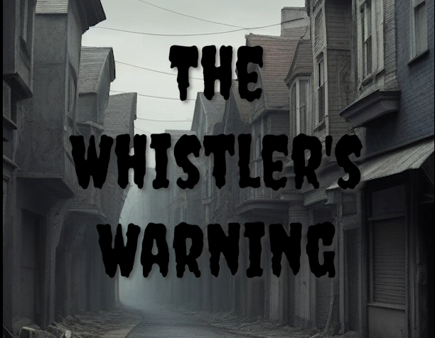
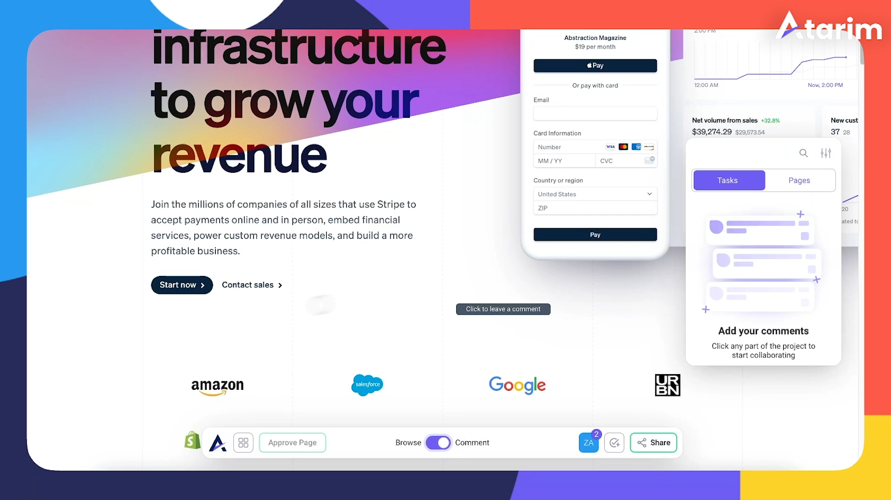
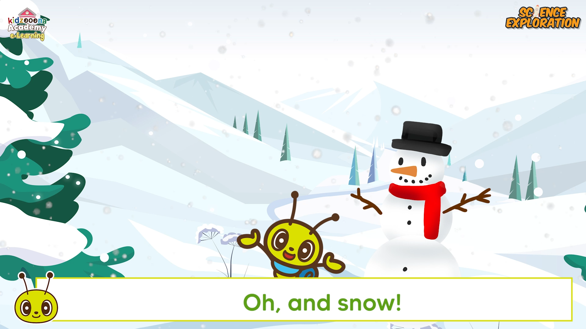
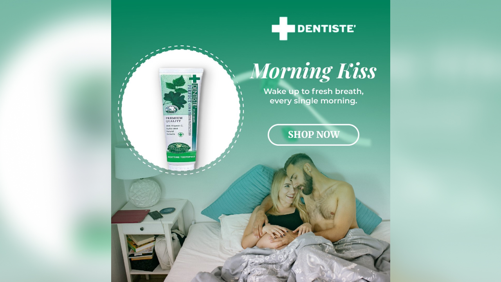
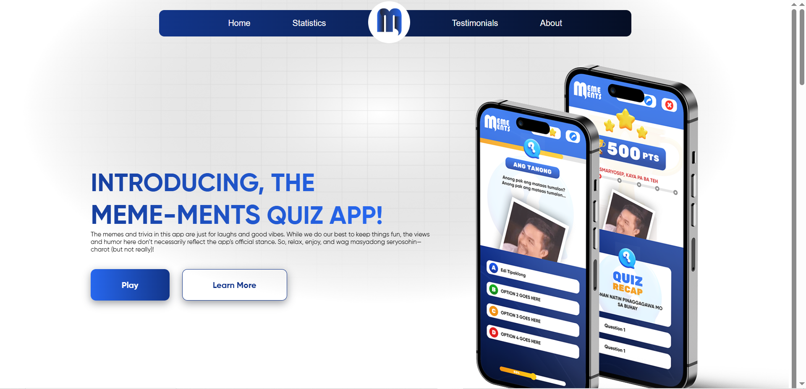

A multidisciplinary digital designer and video editor with a knack for transforming brand identities into compelling layouts and multimedia stories. Explore my work and see how I can bring your vision to life.
From a young age, I was fascinated by the power of visual storytelling. I have spent the last 4 years honing my skills as a Video Editor, where I learned how to craft engaging narratives and design multimedia assets that strictly follow brand guidelines. Alongside my professional video work, my Computer Science degree and UI/UX internship allowed me to expand my expertise into digital design, completing multiple full-lifecycle projects using Figma. Today, I combine my deep understanding of visual pacing with a strong foundation in layout, typography, and interface design. What sets me apart is my multidisciplinary approach—whether I am editing a high-impact promotional video or designing a clean, high-retention social media layout, I blend creative vision with technical precision.
Multidisciplinary digital designer and video editor with 4+ years of experience in visual storytelling. Combining a background in Computer Science, UI/UX prototyping in Figma, and professional multimedia production, I craft cohesive digital assets and engaging visual layouts.
Read MoreExperienced in transforming raw footage into impactful marketing materials and promotional videos. I blend creativity with technical precision to ensure each video not only meets but exceeds client expectations.
Skilled in designing dynamic visual elements and engaging animations to explain concepts clearly. I focus on creating highly visible, immersive visual experiences tailored for modern web and social platforms.
Proficient in crafting visual identities, including logos, promotional posters, and product packaging. Strong understanding of typography, layout, and spacing to deliver design assets that maintain brand consistency.

(Premiere Pro, After Effects): A high-retention 9:16 vertical reel optimized specifically for the IG format. Features intense audio pacing, dynamic motion graphics, and precise color grading to build suspense and maximize engagement metrics.
Review Project
(Premiere Pro, Figma, Audition): A sleek, conversion-focused promotional video for digital platforms. Blends custom UI animations with professional voiceovers and upbeat pacing to communicate complex product features and drive lead generation.
Review Project
Kidzooona Project: (Premiere Pro,Photoshop, Animator, After Effects) A long-form narrative showcase highlighting sustained storytelling. Focuses on seamless scene transitions, advanced audio leveling, and immersive visual layouts to maintain viewer's attention.
Review Project(Photoshop, Illustrator): Custom brand identities and scalable logo designs. Focused on strong typography, color theory, and visual hierarchy to establish cohesive, memorable branding for digital spaces.
Review Project
(Photoshop, Illustrator): Promotional posters and event booth layouts. Focused on spatial hierarchy, readable typography, and strong visual branding applied to real-world physical marketing.
Review Project
(Figma): High-fidelity wireframes and interactive web prototypes. Focused on intuitive user flows, structured digital layouts, and strict visual consistency across responsive digital interfaces.
Review Project